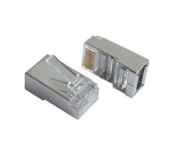

Tinklo įranga
 Gaukite pasiūlymą
Užpildykite žemiau esančią formą norėdami gauti mūsų pasiūlymą.
Sutinku su privatumo politika . Siųsti Meniu Gaukite pasiūlymą Sprendimai Asmenų / darbuotojų stebėjimas Mikromobilumas Lengvieji automobiliai Sunkusis transportas Vandens transportas Palydovinis stebėjimas Keleivinio transporto stebėjimas Autonominis stebėjimas Žemės ūkio technikos stebėjimas Specialusis transportas ir įranga Produktai Transporto stebėjimo įrenginiai Tinklo įranga Asmenų / darbuotojų stebėjimo įrenginiai Priedai Daiktų internetas (IoT) Platformos Pagalba Naujienos Apie musProduktai
Tinklo įranga
Lematics siūlo platų tinklo produktų asortimentą, skirtą Jūsų įmonės tinklo tobulinimui bei praturtinimui. Mūsų produktai padės pastatyti tvirtus pamatus Jūsų tinklui ir užtikrins puikią patirtį vartotojui. Jei nerandate norimo produkto arba ieškote kažko ypatingo, kreipkitės į mus – mes padėsime Jums įgyvendinti savo sprendimą.
LTE
RUT240Compact but powerful 4G LTE & WiFi cellular router with Ethernet and I/O. G...
Plačiau Palyginti RUT850Specifically designed, tested and E-mark certified 4G LTE & WiFi automotive...
Plačiau Palyginti RUT950Rugged and durable professional 4G LTE Dual SIM cellular router with advanc...
Plačiau Palyginti RUT955Professional rugged Dual SIM 4G LTE & WiFi cellular router. Highly secure a...
Plačiau Palyginti TRB140Small and quick to deploy industrial Ethernet to 4G LTE IoT gateway. Advanc...
Plačiau Palyginti TRB141Small Industrial LTE Cat 1 Gateway equipped with multiple Inputs/Outputs an...
Plačiau Palyginti TRB142Robust and reliable RS232 to 4G LTE Cat1 IoT gateway. Linux based advanced ...
Plačiau Palyginti TRB145Lightweight and powerful RS485 to 4G LTE Cat1 IoT gateway. High performance...
Plačiau Palyginti RUTX09Next generation LTE-A Cat6 cellular IoT router with Dual SIM, Carrier Aggre...
Plačiau Palyginti RUTX11Most powerful and feature rich device within Teltonika Networking products ...
Plačiau Palyginti3G
RUT230Small and reliable cellular router with 3G & WiFi. Equipped with Ethernet a...
Plačiau Palyginti RUT900Dual SIM 3G industrial cellular router with WiFi and multiple Ethernet inte...
Plačiau PalygintiEthernet
RUTX08Durable and powerful Ethernet-to-Ethernet router with advanced OpenWrt base...
Plačiau Palyginti RUTX10Next-Generation Teltonika Enterprise router, equipped with the Dual Band Wi...
Plačiau PalygintiAntenos
QuMax for RUTX11Plačiau Palyginti QuSpot for RUTX11
Plačiau Palyginti QuSpot for RUT240
Plačiau Palyginti QuMax for RUT240
Plačiau Palyginti QuSpot for RUT900
Plačiau Palyginti QuMax for RUT900
Plačiau Palyginti QuSpot for RUT955
Plačiau Palyginti QuMax for RUT955
Plačiau Palyginti QuSpot for RUTX09
Plačiau Palyginti QuMax for RUTX09
Plačiau Palyginti QuSpot for RUTX10
Plačiau Palyginti QuMax for RUTX10
Plačiau Palyginti QuSpot for TRB140
Plačiau Palyginti
Plačiau Palyginti
Priedai
Powering options
EU power supply, 4.5WPlačiau UK power supply, 4.5W
Plačiau AU power supply, 4.5W
Plačiau US power supply, 4.5W
Plačiau EU power supply, 9W
Plačiau UK power supply, 9W
Plačiau AU power supply, 9W
Plačiau US power supply, 9W
Plačiau EU power supply, 18W
Plačiau UK power supply, 18W
Plačiau AU power supply, 18W
Plačiau US power supply, 18W
Plačiau Automotive power supply
Plačiau Power cable with 4-way screw terminal
Plačiau
Antenna options
COMBO MIMO Mobile ROOF SMA AntennaPlačiau COMBO SISO Mobile/GNSS/WiFi ROOF SMA Antenna
Plačiau COMBO MIMO Mobile/GNSS/WIFI ROOF SMA Antenna
Plačiau Mobile SMA Antenna
Plačiau WiFi SMA Antenna
Plačiau WiFi dual-band SMA antenna
Plačiau Mobile magnetic SMA Antenna
Plačiau WiFi magnetic SMA Antenna
Plačiau WiFi dual-band magnetic sma antenna
Plačiau Mobile adhesive sma antenna
Plačiau Mobile adhesive fakra antenna
Plačiau Bluetooth magnetic SMA antenna
Plačiau
Mounting options
DIN Rail KitPlačiau Compact DIN Rail Kit
Plačiau Surface Mounting Kit
Plačiau TRB DIN Rail Kit
Plačiau
Sprendimai
Asmenų / darbuotojų stebėjimas Mikromobilumas Lengvieji automobiliai Sunkusis transportas Vandens transportas Palydovinis stebėjimas Keleivinio transporto stebėjimas Autonominis stebėjimas Žemės ūkio technikos stebėjimas Specialusis transportas ir įrangaProduktai
Transporto stebėjimo įrenginiai Tinklo įranga Asmenų / darbuotojų stebėjimo įrenginiai Priedai Daiktų internetas (IoT) PlatformosPagalba
DUK Pagalba klientams Sales support Premiere supportĮmonė
Apie mus Karjera Naujienos Privatumo politika Slapukų politika KontaktaiNaujienlaiškis
Užsiprenumeruokite mūsų naujienlaiškį ir sužinokite pirmasis mūsų pasiūlymus bei naujienas!
Prenumeruoti © 2017 - 2020 Lematics Sprendimas: Infoface